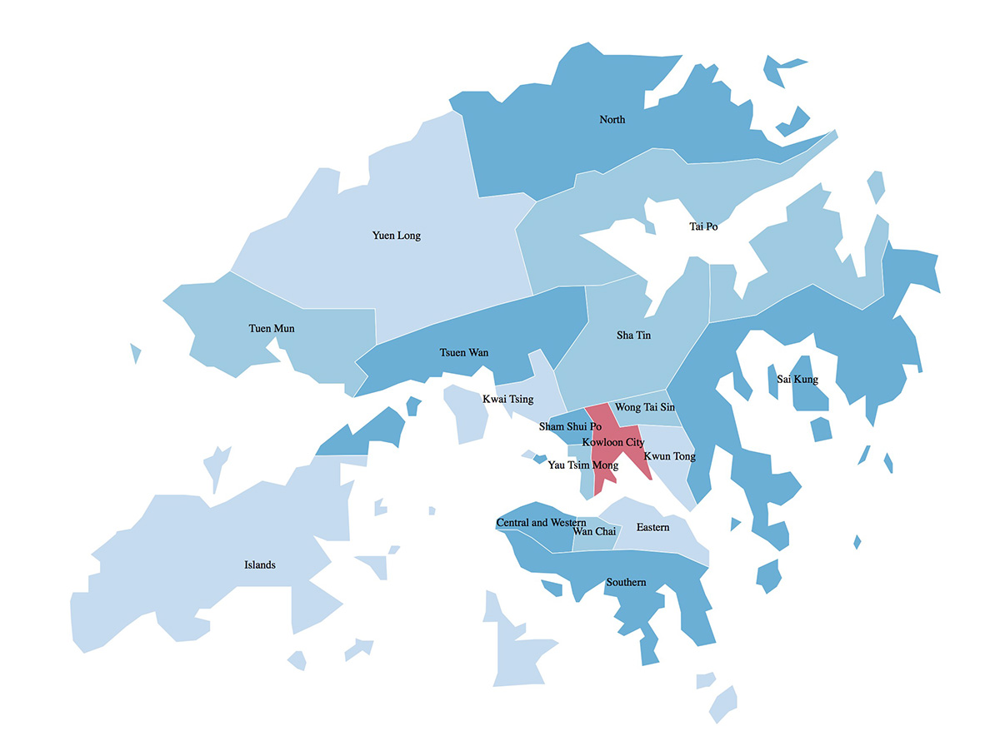

home>홍콩정보>위치
위치

중국 남부 해안의 주강삼각주 초입에 위치한 홍콩은 지리적 위치를 기반으로 동양과 서양 사이의 관문으로서 국제 무역의 매력적인 허브 역할을 해 왔다. 이러한 이점을 반영하듯, 아시아의 세계적 도시, 홍콩의 중심부는 항상 분주하고 아름다운 빅토리아 항구였다. 홍콩의 1,104 평방킬로미터를 차지하는 이 지역은 항구의 남쪽에 위치한 홍콩 섬과, 북쪽 해안을 형성하고 있는 구룡 반도, 그리고 구룡 북쪽에서 중국 본토까지 길게 뻗어있는 신계, 그리고 홍콩 국제 공항이 위치한 란타우 섬을 비롯한 200개가 넘는 외진 섬들로 구성되어 있다.